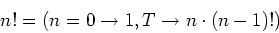

The talk that wasn't
How do you condense a 30 minute talk in 5 minutes? Should you even try? These are the questions I struggled with when someone nudged me to register for the lightning talks. My talk was 30 minute long because I was to jump in if a last-minute incident would prevent someone to get on stage. Call me the backup speaker, if you will. In organizing Heart of Clojure, Arne Brasseur and Martin Klepsch had prepared for every eventuality. Luckily, the event was incident free, and I was relieved of duty. But that someone was right: a lightning talk was the only redeeming option I had before calling it quits.
TL;DR Lisp is not based on the Lambda Calculus
My topic was Lisp in the broader context of science. The recursive functions mentioned in McCarthy's seminal paper, Recursive functions of Symbolic Expressions and Their Computation by Machine, Part I refer to the class of functions studied in computability theory. They are interesting because with just three initial functions (successor, constant and projection functions) closed under composition and primitive recursion, one can produce most computable functions studied in number theory (addition, division, factorial, exponential, etc.).
Note: Recursion is the process that consists in defining the value of a function by using other values of the same function.
The primitive recursive functions originated with the proof Gödel provided for his incompleteness theorems. They evolved over time with contributions by Jacques Herbrand, Stephen Cole Kleene and Rózsa Péter, among others. With only minor additions, like a minimisation operator, a broader set of functions could be defined, equivalent to those computable by a Turing machine. They are known as the μ-recursive functions.
One can envision the title of McCarthy's paper as a one-liner that stands in for his theory. It seems to tell us: here is how to mechanically compute a set of partial functions that operate on symbolic expressions. Remember that McCarthy's goal was AI research. The Advice Taker was going to operate on sentences, not numbers, in order to infer facts from them. John McCarthy needed a system that could process formal languages, hence the symbolic expressions. And indeed, differentiation of algebraic expressions was among the first achievements of Lisp systems.
McCarthy's innovation in recursive function theory is known as McCarthy's formalism. John McCarthy showed that writing recursive function definitions using conditional expressions allowed combining the base case and the inductive case into a single formula. In his seminal paper, McCarthy continued to prefer mathematical notation, which he called his publication notation. With the conditional expression defined as:
\begin{equation} (p_{1} \rightarrow e_{1},\dotsc,p_{n} \rightarrow e_{n} ) \end{equation}The traditional brace notation for factorial:
\begin{equation} \operatorname{fac} \left({n}\right) = \begin{cases} 1 & : n = 0 \\ \operatorname{mult} \left({n, \operatorname{fac} \left({n - 1}\right)}\right) & : n > 0 \end{cases} \end{equation}Takes this form: 
McCarthy's formalism is regarded as a precise and substantial refinement of the partial recursive functions (Moschovakis, 2001, p. 919). On a real world Lisp 1.5 implementation:
DEFINE (( (FACTORIAL (LAMBDA (N) (COND ((ZEROP N) 1) (T (TIMES N (FACTORIAL (SUB1 N)))) ))) ))
Note: DEFINE was called a pseudo-function, they were used for their side-effects.
Ignoring for a moment stack considerations, factorial can be expressed in modern Lisps like this:
(defn factorial [n] (if (<= n 0) 1 (* n (factorial (dec n)))))
Isn't that neat? Well, that is not a coincidence.
Then mathematical neatness became a goal and led to pruning some features from the core of the language. — John McCarthy, Lisp session, History of Programming Languages
To understand Lisp's origin story is to understand that John McCarthy had a mathematician's perspective, approach and ambition. For example, the Lisp system presented in his paper was purely functional, while the real world implementation from his lab had side-effecting constructs.
Another way to show that LISP was neater than Turing machines was to write a universal LISP function and show that it is briefer and more comprehensible than the description of a universal Turing machine. — John McCarthy, History of Lisp
It is also telling that while McCarthy envisioned the universal LISP function, he left the implementation as an exercise for the reader. Luckily for us, Steve Russell was that reader, and he did write an implementation. This is the famous metacircular evaluator apply/eval that Alan Kay dubbed the Maxwell equations of computing.
McCarthy's ambition is made overly clear in A Basis For a Mathematical Theory of Computation, published soon after the seminal paper we mentioned, in which he explains the deficiencies of the current theories, and defines the goals of a new formalism for the science of computation.

Back at Heart of Clojure, I carried myself to the registration board, put my name on the list and the title of my lightning talk, Contextualizing Lisp. What on earth was I going to cram in 5 minutes? I had an idea which I discarded every time it popped in my head, yet it got the better of me. Betting on the widespread mischaracterization of Lisp as a derivative of the Lambda Calculus, I burst onto the stage asking for a show of hands: Who thought Lisp was based on the Lambda Calculus? Who though it wasn't? Who didn't know what to think?
… one of the myths concerning LISP that people think up or invent for themselves becomes apparent, and that is that LISP is somehow a realization of the lambda calculus, or that was the intention. The truth is that I didn't understand the lambda calculus, really. — John McCarthy, Lisp session, History of Programming Languages
Note: Yes, John McCarthy borrowed the lambda notation from Alonzo Church. He also understood it better than he wants you to believe.
Sure, it was a gimmick, but it seemed to work. There was some bemusement. People were listening. I wasn't going to go home on an anticlimax after all. How is it possible that we carry so many half-truths and approximations concerning the origins of our field? Is it a failure of our educational institutions that teach STEM without giving the historical and philosophical perspective? Or maybe it's our fault, another aspect of our infamous tendency toward cargo culting? Alfred North Whitehead said that civilization advances by extending the number of important operations which we can perform without thinking of them. If he is right, then the cost of civilization is all the thinking being retired from it.
Thinking is not driven by answers but by questions. On the stage of Heart of Clojure, I wished I could dwell longer on some points pertaining to the philosophy of science. But in the front row someone was flashing cue cards. Two minutes left. Back in the days of McCarthy, computing was attracting scientists from different backgrounds. Mathematics, that we have already established, but also the cognitive sciences, linguistics, etc. The field was emerging, amorphous, malleable. The term computer science was coined in 1961, one year after McCarthy's Lisp paper. McCarthy, in turn, was paying close attention to the work done by Allen Newell, Herbert A. Simon and Cliff Shaw on IPL, where list processing originated. The three luminaries wrote an AI program before the term even existed: Logic Theorist, a program that proved theorems in Whitehead and Russell's Principia Mathematica. Yes, the same Principia Mathematica referenced by Gödel in his paper Über formal unentscheidbare Sätze der Principia Mathematica und verwandter Systeme I and where our famous recursive functions come from.
Giving a sense of how revolutionary that paper was is crucial. Starting with David Hilbert and the axiomatic method, one needs to explain how mathematics tried and failed to establish its own consistency. This chapter in the early 20th century is known as the Foundational crisis of Mathematics. The initial setback was followed by groundbreaking insights in logic, metamathematics and decidability. The Entscheidungsproblem, in particular, set in motion the research that brought forth the computation models that lie at the heart of our programming languages.
The shift from philosophical inquiry to applied science is one that is difficult to track indeed. It doesn't help that computability theory was known as recursion theory until leading figures such as Robert I. Soare called for a rebranding of the field. The conflation of the notion of recursion, or mathematical induction, with the notion of computability, or calculability, was deemed detrimental. But this messiness is characteristic and essential to the way science is made.
Imagine that thinkers, scientists and inventors would systematically credit their influences: we could go up the chain and draw a chart of scientific innovation. Instead, we have to cross-reference by independent means, relying on educated guesswork, research and investigation. Back in the 17th century, Wilhelm Leibniz thought it would be desirable to mechanize thought. He envisioned the spécieuse générale, a formal language accompanied by the first attempts at arithmetization of syntax. Three centuries later, Kurt Gödel would use this technique with such resounding success that today it bears his name, Gödel numbering.
For Leibniz, the ideal language is one where logical relations are so transparent that they exclude any form of ambiguity, leaving room only for calculation. This might sound spurious to our contemporary ears, but three centuries later, David Hilbert asked if there was an algorithm capable of calculating the truth or falsity of mathematical statements. Questions get asked in new ways, redefining the domain of discourse, and sometimes progress is made. Of course, I never got to touch any of that. The five minutes were over. I left the podium and headed to the back of the venue. How did I feel? Highly inadequate. Did I regret it? Not at all. I had a look at the audience from the last rows. The venue was packed. I marveled at the idea that a tenuous commonality such as an interest in a Lisp system was reason enough to grow a community around it. Surely, I would be back sometime, somewhere, at a conference near you.